N/C
NOT gate
AND gate
3-input AND gate
4-input AND gate
OR gate
XOR gate
NAND gate
3-input NAND gate
4-input NAND gate
NOR gate
XNOR gate
D-TYPE-FLIPFLOP
SR-FLIPFLOP
D-TYPE-LATCH
SR-LATCH
LATCH
DELAY
CLK-DELAY
Across the top, the truth table shows the inputs, internal states, and outputs of the gate in that order.
| | | |-|-| | A | An input, typically for a gate where the inputs are interchangeable | | B | An input, typically for a gate where the inputs are interchangeable | | C | An input, typically for a gate where the inputs are interchangeable, or an input representing a clock | | D | An input. Either the 4th input where the inputs are interchangeable, or an input carrying data | | E | An Enable input. Typically if a gate has an Enable input, its state will not change unless E is high | | R | A Reset input. Representing a signal to reset the output to 0 (false) | | S | A Set input. Representing a signal to set the output to 1 (true) | | Q | The output of the logic gate | | 0 | A value of 0, logical false | | 1 | A value of 1, logical true | | ✕ | Either a 0 or a 1, false or true | | N̅ | A line over a symbol indicates the logical inverse of that value | | 🠉 | An upwards arrow indicates that the gate responds to a rising edge. Where the input goes from 0 to 1 | | 🠋 | A downwards arrow indicates that the gate responds to a falling edge. Where the input goes from 1 to 0 | | N₀ | A tiny 0 after a value indicates the value in the previous sample | | N₁ | A tiny 1 after a value indicates the value in this sample |
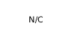
When no gate is selected, the DO-1xx device shows N/C which is short for Not Connected. The output is always 0 (false)
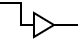
The NOT gate has a single input A. The output Q is always the logical inverse of A. So when A is 1 (true) then Q is 0 (false); and when A is 0 (false) then Q is 1 (true)
| A | Q | |---|---| | 0 | 1 | | 1 | 0 |
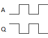
The AND gate has two inputs A and B. The output Q is 1 (true) if and only if BOTH A and B are 1 (true)
| A | B | Q | |---|---|---| | 0 | 0 | 0 | | 0 | 1 | 0 | | 1 | 0 | 0 | | 1 | 1 | 1 |
The 3-input AND gate has three inputs A, B and C. The output Q is 1 (true) if and only if ALL OF A, B and C are 1 (true)
| A | B | C | Q | |---|---|---|---| | 0 | 0 | 0 | 0 | | 0 | 0 | 1 | 0 | | 0 | 1 | 0 | 0 | | 0 | 1 | 1 | 0 | | 1 | 0 | 0 | 0 | | 1 | 0 | 1 | 0 | | 1 | 1 | 0 | 0 | | 1 | 1 | 1 | 1 |
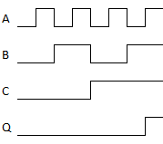
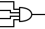
The 4-input AND gate has four inputs A, B, C and D. The output Q is 1 (true) if and only if ALL OF A, B, C and D are 1 (true)
| A | B | C | D | Q | |---|---|---|---|---| | 0 | 0 | 0 | 0 | 0 | | 0 | 0 | 0 | 1 | 0 | | 0 | 0 | 1 | 0 | 0 | | 0 | 0 | 1 | 1 | 0 | | 0 | 1 | 0 | 0 | 0 | | 0 | 1 | 0 | 1 | 0 | | 0 | 1 | 1 | 0 | 0 | | 0 | 1 | 1 | 1 | 0 | | 1 | 0 | 0 | 0 | 0 | | 1 | 0 | 0 | 1 | 0 | | 1 | 0 | 1 | 0 | 0 | | 1 | 0 | 1 | 1 | 0 | | 1 | 1 | 0 | 0 | 0 | | 1 | 1 | 0 | 1 | 0 | | 1 | 1 | 1 | 0 | 0 | | 1 | 1 | 1 | 1 | 1 |
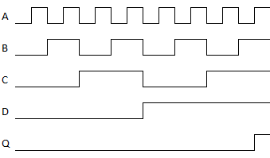
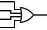
The OR gate has four inputs A, B, C and D. The output Q is 1 (true) if and only if ANY OF A, B, C or D are 1 (true)
| A | B | C | D | Q | |---|---|---|---|---| | 0 | 0 | 0 | 0 | 0 | | 0 | 0 | 0 | 1 | 1 | | 0 | 0 | 1 | 0 | 1 | | 0 | 0 | 1 | 1 | 1 | | 0 | 1 | 0 | 0 | 1 | | 0 | 1 | 0 | 1 | 1 | | 0 | 1 | 1 | 0 | 1 | | 0 | 1 | 1 | 1 | 1 | | 1 | 0 | 0 | 0 | 1 | | 1 | 0 | 0 | 1 | 1 | | 1 | 0 | 1 | 0 | 1 | | 1 | 0 | 1 | 1 | 1 | | 1 | 1 | 0 | 0 | 1 | | 1 | 1 | 0 | 1 | 1 | | 1 | 1 | 1 | 0 | 1 | | 1 | 1 | 1 | 1 | 1 |
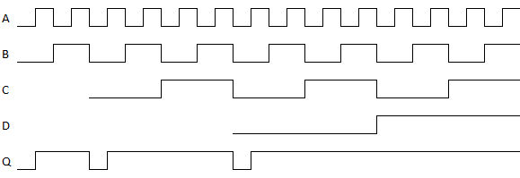
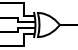
The XOR gate has four inputs A, B, C and D. The output Q is (true) if and only if EITHER 1 or 3 OF A, B, C or D are 1 (true). If 0, 2 or 4 of A, B, C or D are 1 (true) then Q will be 0 (false)
| A | B | C | D | Q | |---|---|---|---|---| | 0 | 0 | 0 | 0 | 0 | | 0 | 0 | 0 | 1 | 1 | | 0 | 0 | 1 | 0 | 1 | | 0 | 0 | 1 | 1 | 0 | | 0 | 1 | 0 | 0 | 1 | | 0 | 1 | 0 | 1 | 0 | | 0 | 1 | 1 | 0 | 0 | | 0 | 1 | 1 | 1 | 1 | | 1 | 0 | 0 | 0 | 1 | | 1 | 0 | 0 | 1 | 0 | | 1 | 0 | 1 | 0 | 0 | | 1 | 0 | 1 | 1 | 1 | | 1 | 1 | 0 | 0 | 0 | | 1 | 1 | 0 | 1 | 1 | | 1 | 1 | 1 | 0 | 1 | | 1 | 1 | 1 | 1 | 0 |
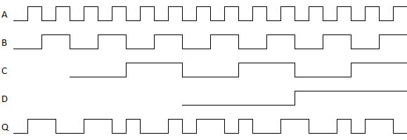
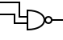
The NAND gate has two inputs A and B. The output Q is 1 (true) if and only if ANY OF A or B are 0 (false)
| A | B | Q | |---|---|---| | 0 | 0 | 1 | | 0 | 1 | 1 | | 1 | 0 | 1 | | 1 | 1 | 0 |

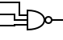
The 3-input NAND gate has three inputs A, B and C. The output Q is 1 (true) if and only if ANY OF A, B or C are 0 (false)
| A | B | C | Q | |---|---|---|---| | 0 | 0 | 0 | 1 | | 0 | 0 | 1 | 1 | | 0 | 1 | 0 | 1 | | 0 | 1 | 1 | 1 | | 1 | 0 | 0 | 1 | | 1 | 0 | 1 | 1 | | 1 | 1 | 0 | 1 | | 1 | 1 | 1 | 0 |
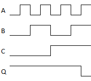
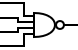
The 4-input NAND gate has four inputs A, B, C and D. The output Q is 1 (true) if and only if ANY OF A, B, C or D are 0 (false)
| A | B | C | D | Q | |---|---|---|---|---| | 0 | 0 | 0 | 0 | 1 | | 0 | 0 | 0 | 1 | 1 | | 0 | 0 | 1 | 0 | 1 | | 0 | 0 | 1 | 1 | 1 | | 0 | 1 | 0 | 0 | 1 | | 0 | 1 | 0 | 1 | 1 | | 0 | 1 | 1 | 0 | 1 | | 0 | 1 | 1 | 1 | 1 | | 1 | 0 | 0 | 0 | 1 | | 1 | 0 | 0 | 1 | 1 | | 1 | 0 | 1 | 0 | 1 | | 1 | 0 | 1 | 1 | 1 | | 1 | 1 | 0 | 0 | 1 | | 1 | 1 | 0 | 1 | 1 | | 1 | 1 | 1 | 0 | 1 | | 1 | 1 | 1 | 1 | 0 |
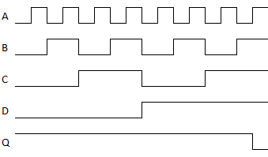
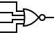
The NOR gate has four inputs A, B, C and D. The output Q is 1 (true) if and only if ALL OF A, B, C and D are 0 (false)
| A | B | C | D | Q | |---|---|---|---|---| | 0 | 0 | 0 | 0 | 1 | | 0 | 0 | 0 | 1 | 0 | | 0 | 0 | 1 | 0 | 0 | | 0 | 0 | 1 | 1 | 0 | | 0 | 1 | 0 | 0 | 0 | | 0 | 1 | 0 | 1 | 0 | | 0 | 1 | 1 | 0 | 0 | | 0 | 1 | 1 | 1 | 0 | | 1 | 0 | 0 | 0 | 0 | | 1 | 0 | 0 | 1 | 0 | | 1 | 0 | 1 | 0 | 0 | | 1 | 0 | 1 | 1 | 0 | | 1 | 1 | 0 | 0 | 0 | | 1 | 1 | 0 | 1 | 0 | | 1 | 1 | 1 | 0 | 0 | | 1 | 1 | 1 | 1 | 0 |
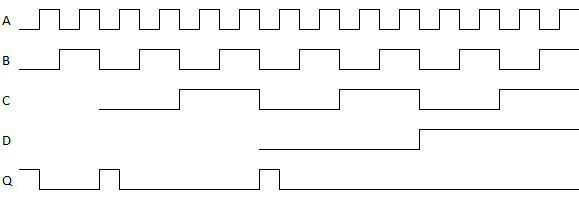
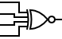
The XOR gate has four inputs A, B, C and D. The output Q is (true) if and only if EITHER 0, 2 or 4 OF A, B, C or D are 1 (true). If 1 or 3 of A, B, C or D are 1 (true) then Q will be 0 (false)
| A | B | C | D | Q | |---|---|---|---|---| | 0 | 0 | 0 | 0 | 1 | | 0 | 0 | 0 | 1 | 0 | | 0 | 0 | 1 | 0 | 0 | | 0 | 0 | 1 | 1 | 1 | | 0 | 1 | 0 | 0 | 0 | | 0 | 1 | 0 | 1 | 1 | | 0 | 1 | 1 | 0 | 1 | | 0 | 1 | 1 | 1 | 0 | | 1 | 0 | 0 | 0 | 0 | | 1 | 0 | 0 | 1 | 1 | | 1 | 0 | 1 | 0 | 1 | | 1 | 0 | 1 | 1 | 0 | | 1 | 1 | 0 | 0 | 1 | | 1 | 1 | 0 | 1 | 0 | | 1 | 1 | 1 | 0 | 0 | | 1 | 1 | 1 | 1 | 1 |
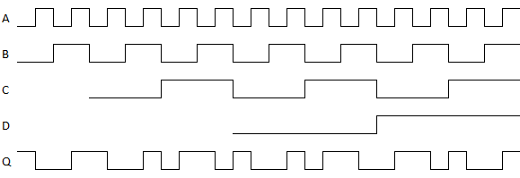
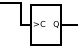
The D-TYPE flipflop has a single edge-triggered input C (clock). The output Q changes whenever the input C rises. i.e. when input C changes from 0 (false) to 1 (true); at that point if Q is 0 (false) it will change to 1 (true), if Q is 1 (true) it will change to 0 (false)
| C₁ | Q₁ | |---|---| | C₀ | Q₀ | | 🠋 | Q₀ | | 🠉 | Q̅₀ |
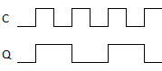
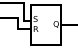
The SR flipflop has two inputs S (set) and R (reset). The output Q is 1 (true) if S is 1 (true). The output Q is 0 (false) if S is 0 (false) AND R is 1 (true). If both S and R are 0 (false), then Q will remain unchanged.
| S | R | Q₁ | |---|---|---| | 0 | 0 | Q₀ | | 0 | 1 | 0 | | 1 | ✕ | 1 |
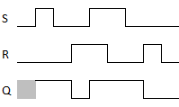
The D-Type Latch has two inputs D (data) and E (enable). The output Q will be equal to the input D while E is 1 (true). When E is 0 (false) Q will remain unchanged irrespective of the state of D.
| D | E | Q₁ | |---|---|---| | ✕ | 0 | Q₀ | | 0 | 1 | 0 | | 1 | 1 | 1 |
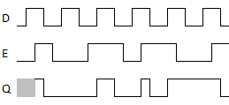
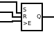
The SR Latch has three inputs S (set), R (reset) and an edge triggered intput E (enable). The output Q will remain unchanged while E is 0 (false). When E rises, i.e. when E changes from 0 (false) to 1 (true) the output Q may be changed. If S is 1 (true) when E rises, then Q will be 1 (true). If S is 0 (false) and R is 1 (true) when E rises, then Q will be 0 (false).
| S | R | E₁ | Q₁ | |---|---|---|---| | ✕ | ✕ | E₀ | Q₀ | | ✕ | ✕ | 🠋 | Q₀ | | 0 | 0 | 🠉 | Q₀ | | 0 | 1 | 🠉 | 0 | | 1 | ✕ | 🠉 | 1 |
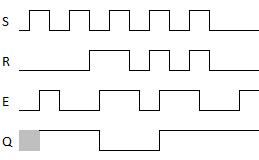
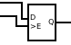
The Latch has two inputs D (data) and E (enable). When E is 0 (false) the output Q will remain unchanged. When E is 1 (true) the output Q will be the same as input D.
| D | E₁ | Q₁ | |---|---|---| | ✕ | E₀ | Q₀ | | ✕ | 🠋 | Q₀ | | 0 | 🠉 | 0 | | 1 | 🠉 | 1 |
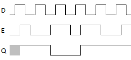
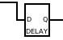
The Delay has one input D (data). The output Q will be the same as the input D but delayed by exactly one sample.
| D₁ | Q | |---|---| | ✕ | D₀ |
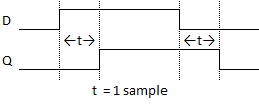diagramfor_DELAY" title="DELAY" />
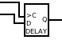
The Clocked-Delay has two inputs C (clock) and D (data). It also has an internal register A. When the input C rises from 0 (false) to 1 (true) the output Q takes on the value of register A; AND at the same time the register A takes on the value of input D. Output Q will remain unchanged until the next time that C rises from 0 (false) to 1 (true).
| C₁ | D | A₁ | Q₁ | |---|---|---|---| | C₀ | ✕ | A₀ | Q₀ | | 🠋 | ✕ | A₀ | Q₀ | | 🠉 | 0 | 0 | A₀ | | 🠉 | 1 | 1 | A₀ |
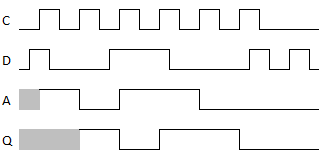